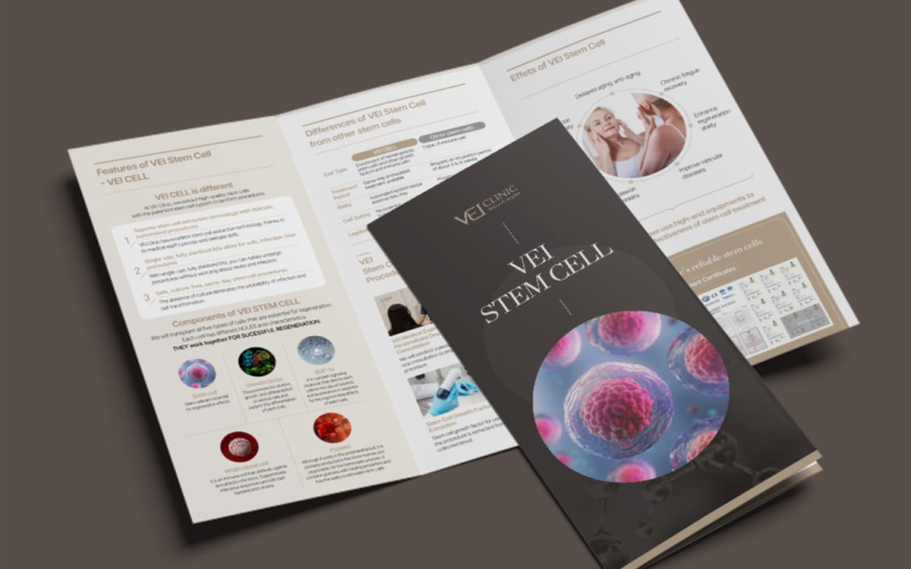

유성구 병원 진료 안내 리플렛 제작, 의료광고 문구는 어디까지 쓸 수 있을까?

목차 ▾
■ 핵심 요약 ① 원내 비치용 안내물과 외부 배포용 홍보물은 의료광고법상 취급이 달라, 배포 방식을 먼저 정해야 문구 기준이 정해집니다. |
안녕하세요, 퍼스트디자인 대전지사입니다. 유성구 도안신도시와 둔산동에는 개원과 확장 이전이 이어지면서 진료 안내 리플렛과 포스터 문의가 늘고 있습니다. 병원 홍보물은 디자인보다 문구가 먼저입니다. 의료법의 의료광고 규정을 모르고 만든 리플렛은 배포 후 회수하거나 재인쇄해야 하는 일이 생깁니다. 오늘은 병원 리플렛을 만들 때 확인해야 할 문구 기준과 제작 순서를 정리해 드리겠습니다.
병원 리플렛은 언제 의료광고가 될까?
같은 리플렛이라도 병원 안에서 내원 환자에게만 주는 안내물과 아파트 단지나 상가에 배포하는 홍보물은 다르게 취급됩니다. 불특정 다수에게 배포하는 전단·팜플렛·리플렛은 의료광고에 해당하며, 의료법과 시행령에서 정한 매체에 해당하면 대한의사협회 등 자율심의기구의 사전심의를 받아야 합니다. 심의 대상 매체와 절차는 진료과와 배포 방식에 따라 달라지므로 제작 전에 해당 심의기구에 확인하는 것이 안전합니다.
저희는 첫 상담에서 리플렛의 배포 방식을 먼저 여쭙니다. 원내 비치용이면 진료 안내 중심으로 구성하고, 외부 배포용이면 심의 절차와 일정을 제작 일정에 포함시킵니다. 심의에 보통 1~2주가 걸리기 때문에 개원 일정이 정해져 있으면 그만큼 앞당겨 시작해야 합니다.

리플렛에 쓸 수 없는 표현은 무엇일까?
의료광고에서 문제가 되는 표현은 대체로 정해져 있습니다. 원고 단계에서 아래 항목을 걸러 두면 심의에서 반려되는 일이 크게 줄어듭니다.
| 피해야 할 표현 | 대신 쓸 수 있는 방향 |
| 치료 효과 보장 · 완치 표현 | 진료 과목과 진료 방식을 객관적으로 안내 |
| 최고 · 최초 · 유일 등 비교 표현 | 보유 장비 명칭, 의료진 경력 사실 기재 |
| 환자 치료 경험담 · 후기 | 진료 절차와 예약 방법 안내 |
| 시술 전후 사진 | 진료 공간 · 장비 사진, 의료진 소개 |
진료 과목 표기도 의료기관 개설 신고 내용과 일치해야 합니다. 원고를 주실 때 개설 신고서의 진료 과목과 의료진 면허 정보를 함께 주시면 저희가 표기를 대조해 드립니다.
진료 안내 리플렛의 면 구성은 어떻게 잡을까?
3단 접지 리플렛 기준으로 표지에는 병원명·진료 과목·대표 전화, 접었을 때 뒷면이 되는 면에는 진료 시간표와 약도·주차 안내를 둡니다. 환자가 리플렛을 냉장고에 붙여 두고 보는 면이 바로 이 뒷면이기 때문입니다. 안쪽 3면에는 진료 과목별 안내, 의료진 소개, 예약과 접수 절차를 순서대로 배치합니다.
글자 크기는 일반 리플렛보다 한 단계 키웁니다. 병원 리플렛의 독자는 고령 환자와 보호자가 많아 본문 10포인트 이상, 진료 시간표는 12포인트 이상을 권합니다. 색은 병원 로고 색 하나와 회색만 써서 정보가 선명하게 읽히도록 합니다.
개원 초기 인쇄 수량은 얼마나 잡아야 할까?
개원 초기에는 진료 시간이나 의료진이 바뀌는 일이 잦습니다. 처음부터 2,000부를 옵셋으로 인쇄하면 변경 시 대량 폐기가 생깁니다. 저희는 초기 200~300부를 디지털 인쇄로 시작하고, 3개월 정도 운영해 정보가 안정된 뒤 옵셋 인쇄로 넘어가는 방식을 권합니다. 같은 데이터를 쓰기 때문에 추가 인쇄는 2~3영업일이면 됩니다.
리플렛과 함께 원내 포스터, 진료 시간표 안내판, 명함, 봉투를 같은 디자인으로 만들면 개원 준비가 한 번에 끝납니다. 유성구·서구 병원은 직접 방문해 용지와 접지 샘플을 보여드립니다.
자주 묻는 질문
Q. 도안신도시에 개원 예정인데 리플렛 문구 검토도 해 주시나요?
A. 네. 원고에서 의료광고 규정에 걸릴 수 있는 표현을 먼저 표시해 드리고, 외부 배포용이면 심의 절차와 일정을 안내해 드립니다. 최종 법적 판단은 심의기구와 병원 측에서 확인하시는 것이 원칙입니다.
Q. 리플렛 제작 기간은 얼마나 걸리나요?
A. 원고가 준비되어 있으면 디자인 3~5영업일, 디지털 인쇄 2~3영업일로 약 1~2주입니다. 외부 배포용은 심의 기간 1~2주를 더 잡아야 합니다.
Q. 진료 과목이 여러 개인데 한 장에 다 넣을 수 있나요?
A. 3단 접지 6면에 들어가는 정보량이 정해져 있어, 과목이 많으면 4단 접지나 8페이지 팜플렛을 권합니다. 과목별 낱장 리플렛으로 나누는 방법도 있습니다.
Q. 원내 포스터와 안내판도 같이 만들 수 있나요?
A. 네. 리플렛 디자인을 기준으로 포스터·안내판·명함·봉투를 같은 톤으로 만들어 드리고, 자체 인쇄소에서 한 번에 인쇄합니다.
| 12년+ 편집 디자인 경력 | 3200+ 납품한 프로젝트 | 98% 재의뢰 · 소개 비율 | 400+ 정부지원사업 · 바우처 수행 |
퍼스트디자인 대전지사는 대덕연구단지와 정부대전청사, 세종·청주·공주 충청권의 연구기관·바이오 기업·공공기관·제조기업 홍보물을 전담합니다. 기획·디자인·번역·촬영·인쇄를 한 팀에서 처리하고, 자체 인쇄소에서 소량 디지털 인쇄부터 대량 옵셋 인쇄까지 직접 진행합니다. 초안을 먼저 확인받고 진행하는 방식으로 12년간 3,200건 이상을 납품했습니다.
유성구·서구·중구 병원과 의원의 진료 안내 리플렛, 개원 홍보물 제작이 필요하시면 개원 일정과 진료 과목을 알려주세요. 문구 검토부터 인쇄까지 한 팀이 진행합니다. 상담은 1600-9487(평일 09:00~18:00) 또는 work@firstmkt.co.kr로 문의해 주세요. 대전·세종·충청권은 직접 방문 미팅도 가능합니다.
FIRST DESIGN DAEJEON
제작을 검토 중이신가요?
제작물 종류와 수량만 알려주시면 당일 견적과 일정을 안내드립니다. 기획부터 디자인·인쇄·납품까지 한 팀이 진행합니다.
제작 전에 자주 받는 질문
퍼스트디자인 대전지사가 상담 자리에서 실제로 많이 듣는 질문을 정리했습니다.
원고가 아직 정리되지 않았는데 상담이 가능한가요?
네. 목적과 독자만 정해져 있으면 됩니다. 연구성과집이든 제품 카탈로그든 원고 구조화부터 함께 시작하고, 표와 도식은 디자인 단계에서 다시 그립니다. 대전·세종·충청권은 방문 미팅에서 원고를 펼쳐 놓고 목차부터 잡아 드립니다.
초안은 언제 볼 수 있나요?
전체 디자인에 들어가기 전에 앞부분 몇 페이지를 먼저 디자인해 초안으로 보여드립니다. 초안 방향이 확정된 뒤 전체 작업을 진행하기 때문에 완성 단계에서 처음부터 다시 만드는 일이 없습니다.
인쇄까지 맡기면 무엇이 달라지나요?
자체 인쇄소에서 색 교정과 감리를 같은 팀이 진행하기 때문에 화면과 인쇄물의 색 차이를 끝까지 관리할 수 있습니다. 용지·코팅·제본 실물 샘플을 보고 사양을 정할 수 있고, 납품 일정도 한 곳에서 책임집니다.
FIRST DESIGN DAEJEON
상담 설문지 작성하고디자인 전문가에게 무료 상담 받기